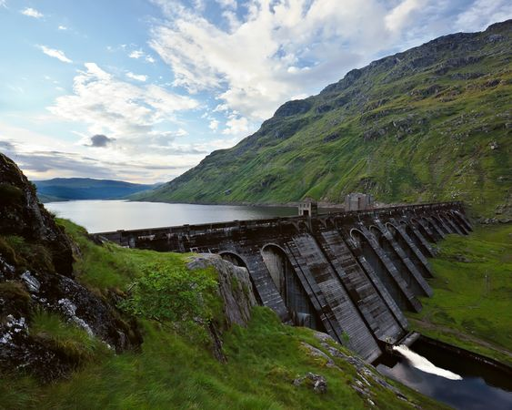
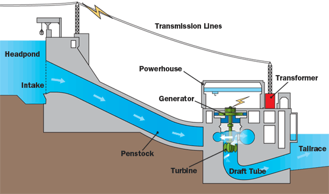

Hydel Energy
Hydel energy is produced by utilizing the kinetic energy of flowing water. Huge dams are built over a source of water. Water
is collected behind the dam and released. When the water falls on the turbine; the turbine moves; because of kinetic energy of
water. Thus, electricity is generated by the turbine. Electricity; thus generated is called hydel energy or hydroelectricity.
Water in the reservoir is replenished with rainwater and so availability of water is not a problem for hydroelectricity.

